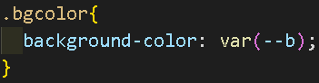
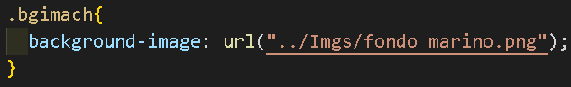
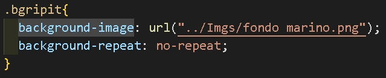
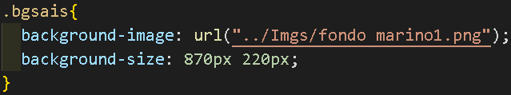

Background es un shorthand, es decir, una propiedad que agrupa otras propiedades, así como lo es margin o padding.
background-color: color;
Es la correcta forma de definir un color de fondo, los colores rellenan todo.

background-image: url(url web | ubicación del archivo en el equipo);
Incrusta una imagen de fondo colocando una URL de internet o el directorio de una imagen guardada en el equipo de cómputo.

background-repeat: repeat | no-repeat | repeat-X | repeat-Y
Repite o no la imagen de fondo (repeat es su valor predeterminado). repeat hace que se repita la imagen en todas direcciones. no-repeat evita que se repita. repeat-X la repite en el eje X (repeticiones una al lado de la otra). repeat-Y la repite en el eje Y (repeticiones una abajo de la otra).

background-size: auto | [ancho]px | [ancho]px [alto]px;
Modifica el tamaño de la imagen de fondo (auto es el valor predeterminado). auto coloca el tamaño original.
Se puede colocar el ancho deseado en pixeles y el largo se modifica automáticamente.
Se puede colocar el ancho y el largo en pixeles (también se pueden utilizar porcentajes % en vez de pixeles px).

background-size: contain | cover;
Ajusta la imagen de fondo a su contenido. contain la adapta para que se visualice en la pantalla completa y si el navegador se agranda o se achica, la imagen adaptará su tamaño para verse completa sin deformarse, pero al no deformarse, obliga a que la imagen no cubra por completo el contenido. cover obliga a que la imagen de fondo cubra todo el contenido aunque implique deformarse, además de que la imagen no se adapta al cambio de tamaño del navegador y la imagen se corta en lo alto o en lo ancho.
background-position: + [coordenada X] px + [coordenada Y] px;
Coloca la imagen de fondo en las coordenadas colocadas (+X +Y) (también se pueden utilizar porcentajes % en vez de pixeles px).
background-position: [left | center | right] [#px] [top | center | bottom] [#px];
Coloca la imagen de fondo en las posiciones colocadas.
El primer valor indica la posición vertical.
El segundo valor indica la separación vertical con el borde del navegador.
El tercer valor indica la posición horizontal.
El cuarto valor indica la separación horizontal con el borde del navegador.
Ejemplo: right 20px bottom 20px
Ejemplo explicado: coloca la imagen de fondo a la derecha del usuario despegada 20px del borde del navegador y hasta abajo despegada 20px del borde del navegador (también se pueden utilizar porcentajes % en vez de pixeles px).
background-clip: content-box | border-box | padding-box;
Nos permite escoger padding-box (caja creada por el relleno), content-box (caja creada por el contenido) o border-box (caja creada por el borde) para colocar la imagen de fondo dentro de la caja escogida (border-box es el valor predeterminado).
Para que la imagen de fondo dentro de una caja no se deforme se coloca el código universal: (*, *:before, *:after{box-sizing:border-box}). content-box acomoda la imagen para contenerla en el contenido de la caja. border-box acomoda la imagen para contenerla hasta el borde de la caja. padding-box acomoda la imagen para contenerla hasta el relleno de la caja.
background-origin: content-box | border-box | padding-box;
Indica desde dónde comienza a dibujarse la imagen de fondo, desde la caja de contenido, borde o relleno.
A diferencia del background-clip, éste no limita sus duplicados para no pasar de su caja correspondiente.
Siempre se comienza a dibujar desde arriba a tu izquierda hasta abajo a tu derecha.
background-attachment: fixed;
Indica si la imagen de fondo ignorará el scroll activando el fixed o se moverá junto con él (el valor por default es scroll).
Se puede jugar con más de una imagen para simular unas y otras no.
background: url position / size repeat attachment origin clip color;
Cuando se aplica este tipo de instrucción-múltiple-shorthand múltiples veces en una instrucción y se declara una propiedad como tamaño en una de las imágenes, ésta propiedad se tiene que aplicar a todas las imágenes declaradas, ejemplo: background-size: 20%;
background: url(oso.jpg) 0 0 / 50%, url(nieve.jpg) center center;
background-repeat: no-repeat;
El no-repeat se aplicará a todas las imágenes
Todas las imágenes tienen una posición definida cada una, pero solo la primera imagen tiene definida una coordenada. Ya que las demás imágenes no tienen definida una, se le aplicará la coordenada de la primera imagen a las demás.
La primera instrucción background-size no es aplicada por el efecto de la segunda instrucción background, por el estilo en cascada se sobre escribe el tamaño de 20% por el de 50% en todas las imágenes.
El slash (/) tiene que colocarse a fuerza después de colocar la url o la posición.
Se pueden utilizar múltiples background en una sola instrucción por ejemplo: background-image: url(oso.jpg), url(nieve.jpg), url(caña.jpg);
background-size: 20%, 40%, 60%;
background-position: 0 0, center center, right bottom;